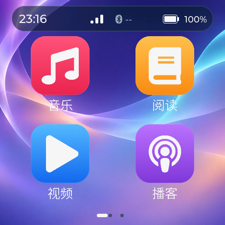
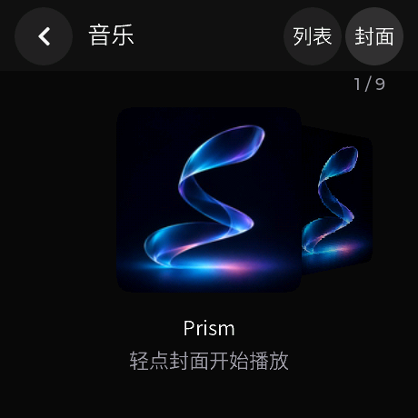
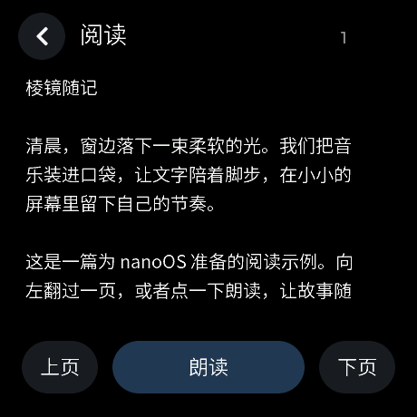
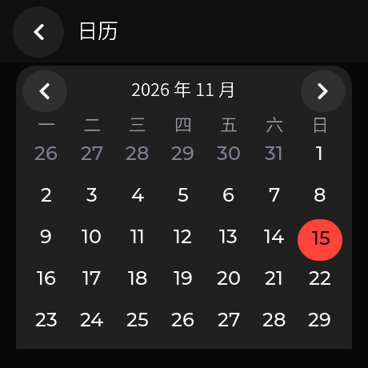

为 FAKE POD NANO PRO S31 打造。让音乐、文字和灵感，随身而行。




设备上的真实界面捕获 · 来自不同开发阶段，非屏幕照片
随身媒体库音乐、视频、照片与播客
轻松传文件同一局域网，浏览器管理
你的使用习惯壁纸、亮度与后台播放
让 AI 随身 ↗了解模型配置与计划能力
0.0.1 固件待发布，ESP32-S31 刷写流程待验证。
NanoOS 正在开发。以下区分已有实现与仍需验证的能力，固件尚未公开发布。
固件与设备刷写验证完成后，这里才会开放安装。当前页面不会请求串口权限，也不会下载或写入固件。
上游 esptool-js 已有 S31 目标实现；ESP Web Tools 的公开类型尚未列出 S31，且默认新装可能全擦。NanoOS 的安装流程仍需独立适配与设备验证。esptool-js ↗ · ESP Web Tools ↗核对日期：2026 年 11 月 16 日。